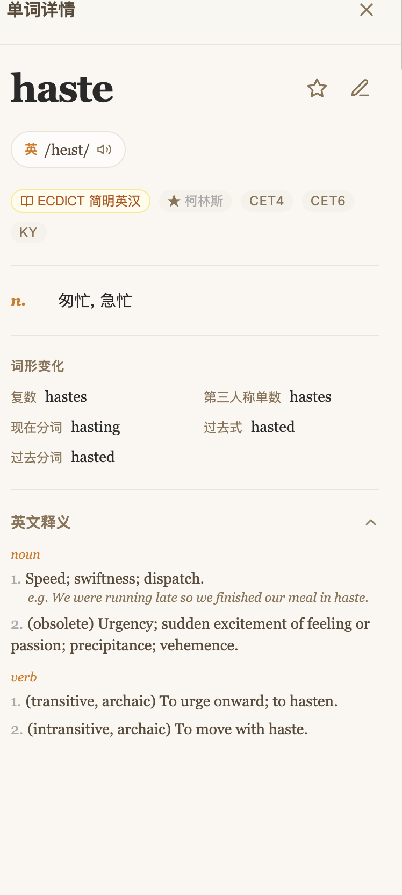

小说英语学习
核心命题：市面英语学习工具都是固定教材，用户想用自己喜欢的小说学英语怎么办？挖掘「自由导入小说」这一竞品空白，用 Vibe-Coding 全流程独立完成——从需求洞察、功能架构、到部署上线。
发现空白 —— 为什么没人让你用自己的书学英语？
问题定义
现有英语学习产品（百词斩、多邻国、扇贝等）全部基于固定教材与预设词库——用户只能学别人选的素材。但真实场景下，用户最想学的往往是自己正在读的那本小说。我分析了竞品矩阵后发现：没有一个产品允许用户自由导入文本，这是一个明确的市场空白。核心假设：用自己喜欢的书学英语，学习动机和持续性会远超预设教材。
竞品扫描
百词斩：强词库 + 图片记忆，但无文本导入，场景封闭
多邻国：游戏化做得好，但课程固定不可自定义
扇贝阅读：有阅读模式，但只能读其内置文库，不能导入
欧路词典：支持文件导入，但体验偏词典查询，非学习闭环
蒙哥阅读器：最接近竞品，支持 EPUB，但付费且仅 iOS
结论：「自由导入 + 英语学习闭环」是一个真实存在的需求缺口，且没有免费 Web 端方案。
三段式学习体验 —— 读 → 标 → 复习
功能架构
围绕「用小说学英语」这个场景，我设计了三个紧密咬合的模块：第一段「读」— 用户自由导入中英小说，系统自动完成段落级双语互译，摆脱固定教材束缚；内置四六级 / 考研 / 雅思词库 + 自定义词书，生词按等级分级高亮（如四级词黄色、六级词橙色），不同颜色让用户一眼识别难点；第二段「标」— 点击任意生词弹出释义弹窗，标注后进入个人词本；第三段「复习」— 已学生词跨章节去重标记，个人词本自动聚合，形成完整学习闭环。
关键设计决策
为什么是段落级而非句子级？——单句翻译缺乏上下文，用户读完仍不理解段落逻辑。段落级保留了原文的叙事流，减少跳出感。
为什么是分级高亮而非统一标记？——如果所有生词都是同一颜色，用户无法快速判断哪些是「该会的但忘了」、哪些是「确实超纲但值得学」。四级黄色 → 六级橙色 → 雅思红色的梯度，让用户一眼建立优先级。
Vibe-Coding 全流程 —— 只用一句话描述，AI 写出整个产品

书架入口 — 学习进度一目了然

词卡详情 — 点击生词弹出释义
从「书架选书」到「生词查询」完整体验：分级高亮 → 点击生词 → 词卡详情标注
从想法到产品
全程使用 AI IDE（Vibe-Coding 方式），前端 / 后端 / 翻译 API 集成 / 数据库设计全部由 AI 辅助生成，我负责产品定义、功能取舍、体验打磨。这不仅是一个学习工具，更是一次「产品经理 + AI 协作」的实战验证——证明一个产品可以用极低的工程成本，快速验证一个市场假设。目前已部署上线，公网可访问，投入真实使用。
项目闭环：从「发现空白」到「自己造轮子」
这个项目验证了两个假设：一是「自由导入小说」确实是一个被忽略的需求；二是AI-Native 工作流让产品经理不再受制于工程资源——不需要等前端排期、不需要说服工程师，自己能快速验证想法。